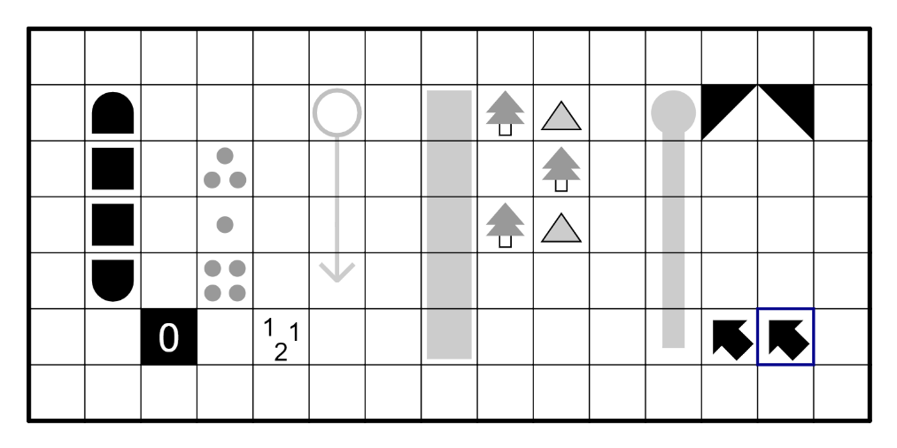

The World Puzzle Championship (WPC) is the World Championship Puzzle Competition run by the World Puzzle Federation and is held annually in a different country.
All the puzzles in the competition are designed to be playable regardless of language or culture. The first WPC was held in 1992 in New York City.
wpc-unofficial.org is an online resource for past and upcoming World Puzzle Championships. It is unofficial and non-profit, and does not hold any rights over its contents. The data is taken from various resources including WPF Newsletters.
It is a fork of ipho-unofficial.org. ipho-unofficial.org on Github.
The theme and design of the webpage is based on imo-official.org.
The theme and design of the webpage is based on imo-official.org.